|
Gezelligheid op noord na Roda-Milan 19-2-2002 |
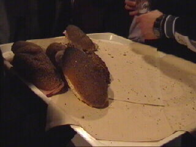
De noord-broodjes zijn belegd met dikke plakken
ham en rauwkost.
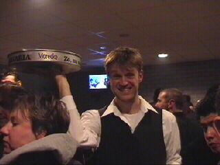
Bas Roorda is de ober ;-)
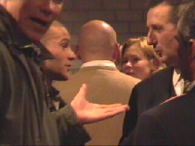
Ouwe jongens krentenbrood......
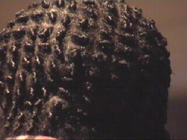
Ingenieus priegelwerk.
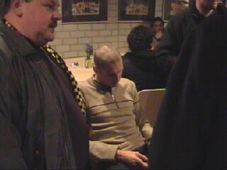
Bob Peeters overdenkt zijn zonden: "Waarom
ging ik toch bij Roda heen?"
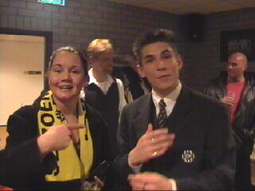
Veronique is eindelijk doorgedrongen tot haar
idool Kevin Van Dessel.
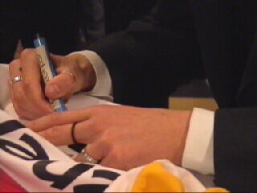
Terwijl Van Dessel Vero's shirt signeert probeer
ik het aantal ringen te tellen.
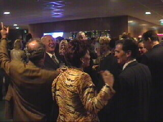
We zijn inmiddels een etage hoger waar meneer
Nol Hendriks over prima zangcapaciteiten blijkt
te beschikken.
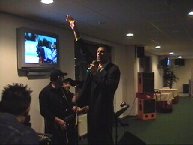
Hetgeen ook geldt voor Zeljko Kalac die de
microfoon van het orkestje overneemt.
Het liedje...... "Take me home" (echt waar).
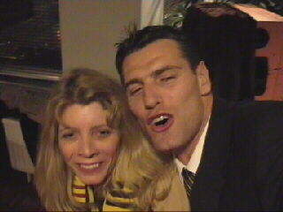
George Leekens neemt me de camera af en zet
Kalac en Koempelin op de foto.
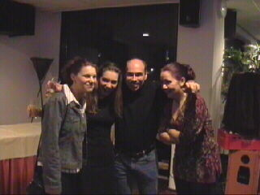
En zo is verliezen helemaal niet meer erg!
©KPD